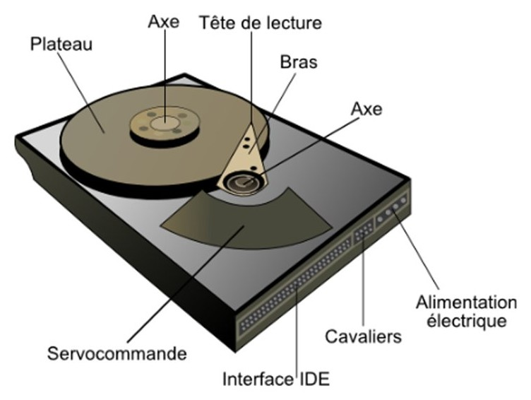
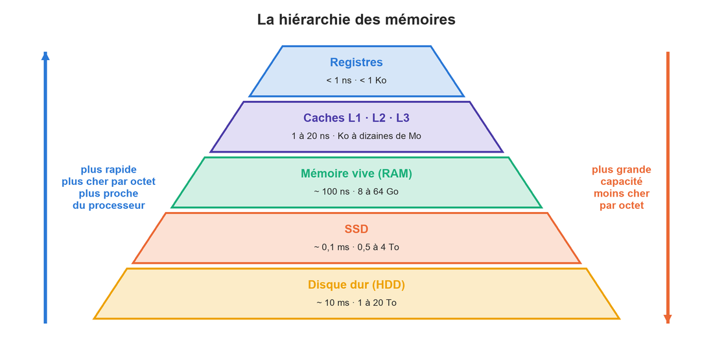
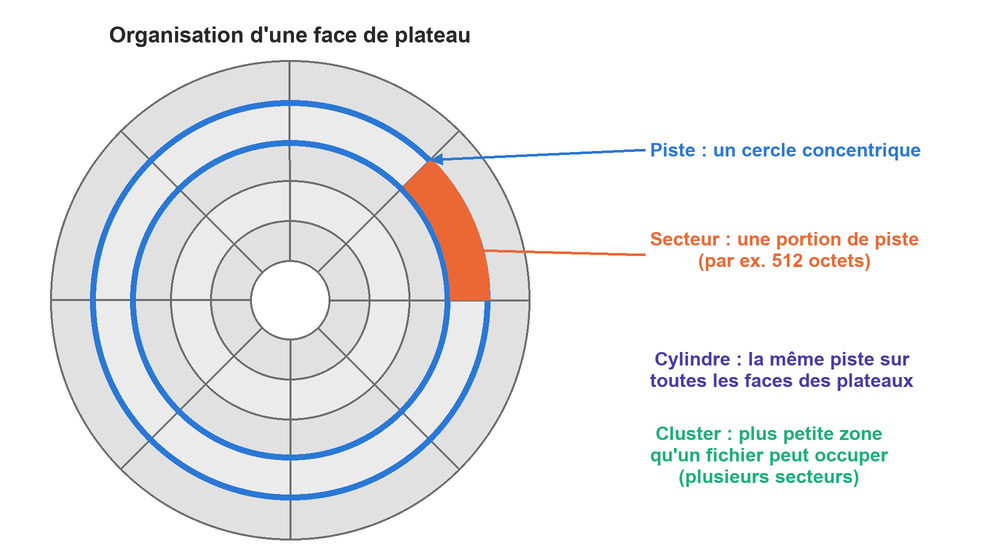

class: center, middle # L'architecture matérielle ## Les mémoires <p></p> --- ## Quelques questions de réflexion... * Lors d'une coupure de courant, vous perdez le document que vous étiez en train de taper... mais pas ceux que vous aviez enregistrés. Pourquoi ? * Pourquoi ne fabrique-t-on pas des ordinateurs avec 2 To de mémoire cache ? * Pourquoi un ordinateur équipé d'un SSD démarre-t-il beaucoup plus vite qu'avec un disque dur ? * Faut-il défragmenter un SSD ? --- ## Quelques définitions * Une mémoire **volatile** a besoin d'une **alimentation électrique continue** pour conserver ses données. Si le courant est coupé, les données sont perdues. * Une mémoire **non volatile** (ou rémanente) **conserve** ses données sans alimentation électrique. * La **mémoire vive** (RAM, *Random Access Memory*) contient les informations **en cours de traitement** : les programmes ouverts et leurs données. * La **mémoire morte** (ROM, *Read-Only Memory*) est une mémoire non volatile dont le contenu est fixé lors de sa fabrication ou de sa programmation. On peut la lire, mais pas (ou difficilement) la modifier. Exemple : le micrologiciel (BIOS/UEFI) qui démarre l'ordinateur. * La **mémoire de masse** est une mémoire de **grande capacité**, non volatile, qui stocke les données de manière permanente : disque dur, SSD, clé USB, DVD, bande magnétique... <span style="color: red;">Attention : « vive » ≠ « volatile » ! Aujourd'hui, il existe des mémoires vives non volatiles, et des mémoires volatiles qui ne sont pas des mémoires vives.</span> --- ## Les caractéristiques d'une mémoire * La **capacité** : le volume d'informations que la mémoire peut stocker (en bits ou en octets). * Le **temps d'accès** : le temps entre la demande de lecture ou d'écriture et la disponibilité de la donnée. * Le **temps de cycle** : le temps minimum entre deux accès successifs. * Le **débit** : le volume d'informations échangé par unité de temps (en bits ou octets par seconde). * La **non-volatilité** : l'aptitude à conserver les données sans alimentation. La mémoire **idéale** aurait une très grande capacité, un temps d'accès quasi nul, un débit énorme... et serait non volatile. Mais elle n'existe pas : **les mémoires les plus rapides sont aussi les plus chères**. --- ## La hiérarchie des mémoires <div style="text-align: center;"> <p></p> </div> Un ordinateur utilise donc **plusieurs niveaux de mémoire**, organisés de façon hiérarchique : des mémoires très rapides mais petites **près du processeur**, et des mémoires lentes mais immenses pour le stockage permanent. --- ## La hiérarchie des mémoires : ordres de grandeur .small-table[ | Mémoire | Emplacement | Capacité typique | Temps d'accès | Volatile ? | |:---|:---|:---:|:---:|:---:| | Registres | dans chaque cœur | quelques centaines d'octets | < 1 ns | oui | | Cache L1 | dans chaque cœur | 32 à 64 Ko par cœur | ~ 1 ns | oui | | Cache L2 | sur le processeur | 256 Ko à quelques Mo | ~ 4 ns | oui | | Cache L3 | sur le processeur (partagé) | 8 à 64 Mo | ~ 10 à 20 ns | oui | | Mémoire vive (RAM) | barrettes sur la carte mère | 8 à 64 Go | ~ 60 à 100 ns | oui | | SSD | dans le boîtier | 0,5 à 4 To | ~ 0,1 ms | non | | Disque dur (HDD) | dans le boîtier | 1 à 20 To | ~ 10 ms | non | ] **Analogie** : vos mains (registres), votre bureau (cache), l'étagère de la classe (RAM) et la bibliothèque de l'école (disque dur). Plus c'est loin, plus il y a de place... mais plus il faut de temps pour aller chercher un livre ! --- ## Les registres et les caches * Les **registres** sont au sommet de la hiérarchie : ils sont fabriqués dans le processeur lui-même et fonctionnent à sa vitesse. Leur nombre est très limité (par exemple 16 registres de 64 bits). * La **mémoire cache** (ou antémémoire) garde une **copie** des données les plus récemment ou les plus fréquemment utilisées. Quand le processeur a besoin d'une donnée, il regarde d'abord dans le cache L1, puis L2, puis L3 : * si la donnée y est, c'est un **succès** (*cache hit*) : l'accès est très rapide ; * sinon, c'est un **échec** (*cache miss*) : il faut aller la chercher en mémoire vive, ce qui prend beaucoup plus de temps. Chaque niveau est **plus lent mais plus grand** que le précédent. --- ## La mémoire vive (RAM) La mémoire vive est le point central du système de mémoire : elle contient **tous les programmes en cours d'exécution** et leurs données. * Tout ce qui ne se trouve pas dans les caches est cherché en RAM. * Plus il y a de RAM, plus on peut ouvrir de programmes et traiter de gros fichiers. **Et si la RAM est pleine ?** Le système d'exploitation utilise la **mémoire virtuelle** : il déplace sur le disque (le *fichier d'échange*) les données qu'il pense utiliser moins souvent. Comme le disque est des milliers de fois plus lent, l'ordinateur se met à « ramer ». <span style="color: red;">→ La RAM est volatile : c'est pour cela qu'un document non enregistré est perdu lors d'une coupure de courant !</span> --- ## SRAM et DRAM .small-table[ | | **SRAM** (RAM statique) | **DRAM** (RAM dynamique) | |:---|:---|:---| | Stockage d'un bit | une bascule électronique de **6 transistors** | **1 transistor + 1 condensateur** (une petite charge électrique) | | Rafraîchissement | inutile tant qu'elle est alimentée | le condensateur se vide en quelques millisecondes : il faut le **rafraîchir** régulièrement | | Vitesse | très rapide | plus lente | | Prix et densité | chère, prend beaucoup de place | bon marché, très dense | | Utilisation | mémoires **cache** | mémoire **centrale** (barrettes de RAM) | ] Les deux sont **volatiles** : sans alimentation, les données sont perdues. --- ## L'évolution de la DRAM La **SDRAM** (*Synchronous DRAM*) est synchronisée avec l'horloge du système. La **DDR SDRAM** (*Double Data Rate*) transfère les données **deux fois par cycle** d'horloge au lieu d'une. .small-table[ | Génération | Arrivée | Évolution | |:---:|:---:|:---| | SDRAM | fin des années 1990 | synchronisée avec l'horloge (66 à 133 MHz), aujourd'hui obsolète | | DDR | 2000 | deux transferts par cycle | | DDR2 | 2003 | débit doublé | | DDR3 | 2007 | débit doublé, consommation réduite | | DDR4 | 2014 | débit doublé, consommation réduite | | DDR5 | 2021 | débit encore doublé | ] <span style="color: red;">Les générations ne sont pas compatibles entre elles : une barrette DDR4 ne rentre pas dans un emplacement DDR5.</span> --- ## Le disque dur (HDD) Le **disque dur** (*Hard Disk Drive*), inventé en **1956**, est une mémoire de masse **magnétique**. * Les données sont stockées sur des **plateaux** qui tournent très vite (de 5400 à 15 000 tours par minute). * Des **têtes de lecture/écriture** (de petits électroaimants) se déplacent au-dessus de chaque face des plateaux, sans jamais les toucher. * Les têtes sont solidaires : **une seule** lit ou écrit à un moment donné. * L'ensemble est enfermé dans un boîtier **hermétique** : la moindre poussière pourrait abîmer les plateaux. --- ## L'organisation d'un disque dur <div style="text-align: center;"> <p></p> </div> Les têtes écrivent d'abord sur le bord extérieur (piste 0), puis avancent vers le centre. --- ## Les caractéristiques d'un disque dur * La **capacité** : le volume de données que le disque peut stocker. * La **vitesse de rotation** : en tours par minute (tr/min ou *rpm*). Plus elle est élevée, meilleur est le débit... mais plus le disque est bruyant et chauffe. * Le **temps de déplacement** : le temps nécessaire pour amener la tête sur la bonne piste. * Le **temps de latence** : une fois sur la bonne piste, le temps d'attente pour que le bon secteur passe sous la tête. * Le **temps d'accès moyen** : le temps moyen entre la demande d'une donnée et sa mise à disposition. * Le **débit** (taux de transfert) : la quantité de données lue ou écrite par seconde. --- ## Les calculs sur un disque dur **Capacité** : * capacité d'une piste = nombre de secteurs par piste × taille d'un secteur ; * capacité d'un cylindre = capacité d'une piste × nombre de faces (= nombre de pistes par cylindre) ; * capacité du disque = capacité d'un cylindre × nombre de cylindres. **Temps** : * durée d'un tour = 60 / vitesse de rotation (en secondes) ; * temps de latence moyen = **la moitié** de la durée d'un tour ; * temps de lecture d'un secteur = durée d'un tour / nombre de secteurs par piste ; * **temps d'accès moyen** = temps de déplacement moyen + temps de latence moyen + temps de lecture d'un secteur. **Débit** = capacité d'une piste × nombre de tours par seconde. --- ## Exemple de calcul Un disque possède 1020 cylindres, 16 faces, 63 secteurs par piste et 512 octets par secteur. Il tourne à **7200 tr/min** et son temps de déplacement moyen est de **8,5 ms**. * Piste : 63 × 512 = **32 256 octets** * Cylindre : 32 256 × 16 = **516 096 octets** * Disque : 516 096 × 1020 = 526 417 920 octets ≈ **526 Mo** * Durée d'un tour : 60 / 7200 = 0,00833 s = **8,33 ms** * Latence moyenne : 8,33 / 2 ≈ **4,17 ms** ; lecture d'un secteur : 8,33 / 63 ≈ **0,13 ms** * Temps d'accès moyen : 8,5 + 4,17 + 0,13 ≈ **12,8 ms** * Débit : 32 256 octets × 120 tours/s = 3 870 720 octets/s ≈ **3,9 Mo/s** --- ## Fichier séquentiel ou fragmenté ? * Un fichier **séquentiel** est enregistré dans des secteurs **qui se suivent** : la tête se place une seule fois, puis lit tout d'une traite. * Un fichier **fragmenté** est éparpillé en plusieurs morceaux un peu partout sur le disque : pour **chaque fragment**, il faut à nouveau payer le temps de déplacement et le temps de latence. **Exemple** (même disque) : lire un fichier découpé en 1000 fragments coûte au moins 1000 × (8,5 + 4,17) ms ≈ **12,7 secondes** d'attente... rien que pour positionner la tête ! <span style="color: red;">→ La **défragmentation** réorganise le disque pour regrouper les morceaux de chaque fichier : la lecture redevient séquentielle et donc beaucoup plus rapide.</span> --- ## La mémoire flash La **mémoire flash** fonctionne comme une mémoire électronique (pas de pièces mobiles), mais elle est **non volatile** : chaque cellule garde sa charge électrique même sans alimentation. On la retrouve partout : clés USB, cartes SD, smartphones, appareils photo... et SSD. * **Avantages** : aucun élément mécanique, donc très **résistante aux chocs** ; les lectures, même répétées, ne l'abîment pas. * **Inconvénient** : chaque cellule ne supporte qu'un **nombre limité d'écritures** (de quelques milliers à environ 100 000 selon la technologie), car l'écriture applique des tensions élevées qui usent la cellule. Pour limiter ce problème, le contrôleur **répartit l'usure** : il écrit à chaque fois dans des cellules différentes. --- ## Le SSD Un **SSD** (*Solid State Drive*) est une mémoire de masse construite avec de la mémoire flash. *Solid state* désigne un composant électronique **sans pièces mobiles**. .small-table[ | | **SSD** | **Disque dur (HDD)** | |:---|:---|:---| | Temps d'accès | ~ 0,1 ms | ~ 10 ms | | Bruit | silencieux | bruit de rotation | | Chocs | très résistant | fragile (pièces mobiles) | | Consommation | faible | plus élevée | | Prix par Go | plus cher | moins cher | | Usure | nombre d'écritures limité | usure mécanique | ] <span style="color: red;">→ Il est **inutile** de défragmenter un SSD : il n'y a pas de tête à déplacer, l'accès est aussi rapide partout. Pire, la défragmentation provoque énormément d'écritures et **use** le SSD pour rien !</span> --- ## Exercice de synthèse Votre grand-père veut « booster » son vieil ordinateur portable. Il hésite entre plusieurs améliorations. Pour chaque proposition, dites si elle est utile et justifiez. 1. Défragmenter son disque dur (HDD) toutes les semaines. 2. Remplacer son disque dur par un SSD. 3. Passer de 4 Go à 16 Go de mémoire vive, car l'ordinateur « rame » quand plusieurs onglets sont ouverts. 4. Ajouter une barrette de DDR5 alors que son ordinateur utilise de la DDR4. 5. Défragmenter le SSD une fois installé. --- ## Sources des images * https://fr.wikipedia.org/wiki/Disque_dur * https://fr.wikipedia.org/wiki/Hiérarchie_de_mémoire * Images : ancien cours d'informatique (INDBG) et réalisation personnelle